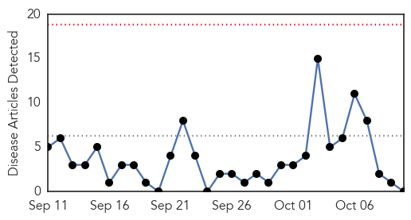
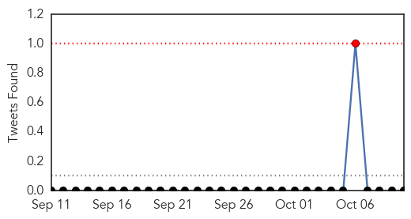
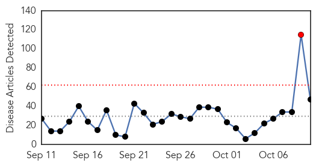
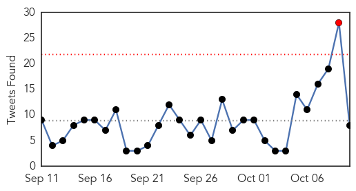
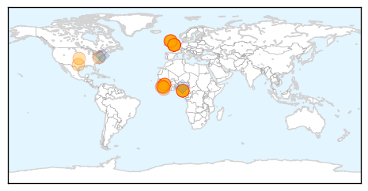

MERS
30-Day Web Trend
0 alerts, 0 warnings

30-Day Twitter Trend
1 alerts, 0 warnings

Article Locations

Article Confidences

Top Articles:
-
No articles found for Oct 10, 2015
Top Tweets:
-
No tweets found for Oct 10, 2015
Ebola
30-Day Web Trend
1 alerts, 0 warnings

30-Day Twitter Trend
1 alerts, 0 warnings

Article Locations
Article Confidences
Top Articles:
- 1.000
- First Brit diagnosed with Ebola back in hospital
- 1.000
- FG, C’River Govt.: Tests Rule Out Ebola in Calabar Death, Articles
- 1.000
- Cross River case not Ebola — WHO, Fed Govt
- 1.000
- Africa - News and Analysis
- 0.999
- Health Ministry Refutes Rumours
- 0.999
- British Ebola survivor hospitalized in serious condition
- 0.999
- Pauline Cafferkey contracts Ebola again and returns to London hospital isolation unit
- 0.999
- Scottish Nurse Who Recovered From Ebola Is Back In Isolation
- 0.998
- Suspicious Death In Nigeria Not Ebola
- 0.998
- British nurse thought cured of Ebola suffers 'relapse'
- 0.998
- J&J announces start of clinical trial of Ebola vaccine regimen
- 0.998
- A Deadly Disease Nearby
- 0.997
- No Ebola virus in Nigeria – FG « Nigerian Pilot Newspaper
- 0.995
- Ebola – doctor says “outlook is good”
- 0.995
- Ebola-Stricken British Nurse Who Hospitalized Again After Complications
- 0.993
- Ebola Virus Still Present in UK Nurse Pauline Cafferkey
- 0.992
- British nurse who contracted Ebola hospitalized again
- 0.992
- Woman tested for Ebola in Edinburgh
- 0.991
- FG debunks Ebola outbreak rumour
- 0.990
- Scots nurse Pauline Cafferkey seriously ill after Ebola ‘reactivates’
- 0.988
- 'Post-Ebola syndrome' hospitalizes British nurse
- 0.983
- Britain: After Recovering From Ebola, Nurse Is Hospitalized Again in London
- 0.983
- Nigeria denies reports of fresh Ebola outbreak
- 0.980
- VIDEO: Ebola nurse ‘seriously ill’
- 0.979
- Ebola-infected British nurse Pauline Cafferkey visited school the day before she was readmitted to hospital
- 0.975
- Ebola Nurse Pauline Cafferkey Visited School Day Before Hospital Readmission
- 0.974
- Ebola nurse Pauline Cafferkey visited school day before hospital readmission
- 0.972
- Ebola Nurse Pauline Cafferkey Readmitted To Isolation Unit Due To Infection Complication
- 0.970
- Ebola nurse sick once again - KRISTV.com
- 0.961
- LIBERIA: UNDP donates solar powered radios To New Georgia
- 0.955
- Ebola: Pauline Cafferkey remains in serious condition
- 0.935
- FG dispels Ebola outbreak in Calabar, urges sustained public hygiene
- 0.929
- Ebola nurse Pauline Cafferkey in a 'serious condition' after complication
- 0.913
- Shropshire Ebola doctor’s shock as nurse readmitted to hospital « Shropshire Star
- 0.908
- Nurse with Ebola visited school day before being readmitted to hospital
- 0.906
- British Ebola survivor nurse hospitalized again
- 0.851
- Ebola nurse Pauline Cafferkey remains 'serious'
- 0.847
- Dr. Nahim speaks on mental health in Sierra Leone
- 0.843
- Ebola nurse Pauline Cafferkey visited school day before being rushed back to hospital
- 0.821
- Tipp FM - the number 1 radio station for the premier county
- 0.820
- Nurse in serious condition after ebola relapse
- 0.804
- British Nurse To Be Tested for Ebola After Contracting The Virus, Returns To London hospital Isolation Unit
- 0.734
- Nurse with Ebola could get blood from survivors
- 0.730
- Family and friends of British nurse to be tested for Ebola after she contracts the virus again: Glasgow medic returns to London hospital isolation unit in ‘serious condition
- 0.607
- UCTH sensitizes staff on Hemorrhagic Fever control
- 0.571
- Nurse who contracted Ebola in serious condition
- 0.520
- Ebola nurse met hundreds of East Kilbride pupils
Top Tweets:
- 0.759
- RT: Ebola virus 'detected' after recovery: "it is unknown whether these viruses could infect & cause disease..." https://t.co/6…
- 0.734
- Good question: Is it flu or Ebola? - Minneapolis Star Tribune http://t.co/IRzkRJTX7T ebola EVD
- 0.711
- Clinical Trial for New Ebola Vaccine Starts in Kambia District Sierra Leone - Critique Echo http://t.co/jDV94j1jd0 ebola EVD
- 0.655
- RT: Dr Chan: The Ebola outbreak in West Africa was a dramatic and tragic revelation of weaknesses and gaps http://t.co/dcKUdg5YrJ
- 0.651
- Nurse earns medal for ebola research - East Lothian News http://t.co/Q7WCVioww4 ebola EVD
- 0.597
- Is Ebola adapting to life in humans? Very ominous if yes. @NPR: Nurse Who Recovered From Ebola Is Back In Isolation http://t.co/3ifv99vDZV
- 0.570
- Nurse with Ebola visited school day before being readmitted to hospital - The Guardian http://t.co/iqdpIslNd5 ebola EVD
- 0.555
- 'Ebola' pupils are cleared as health bosses say they are no longer a danger ... - Daily Mail http://t.co/eNKAlLwI7z ebola EVD